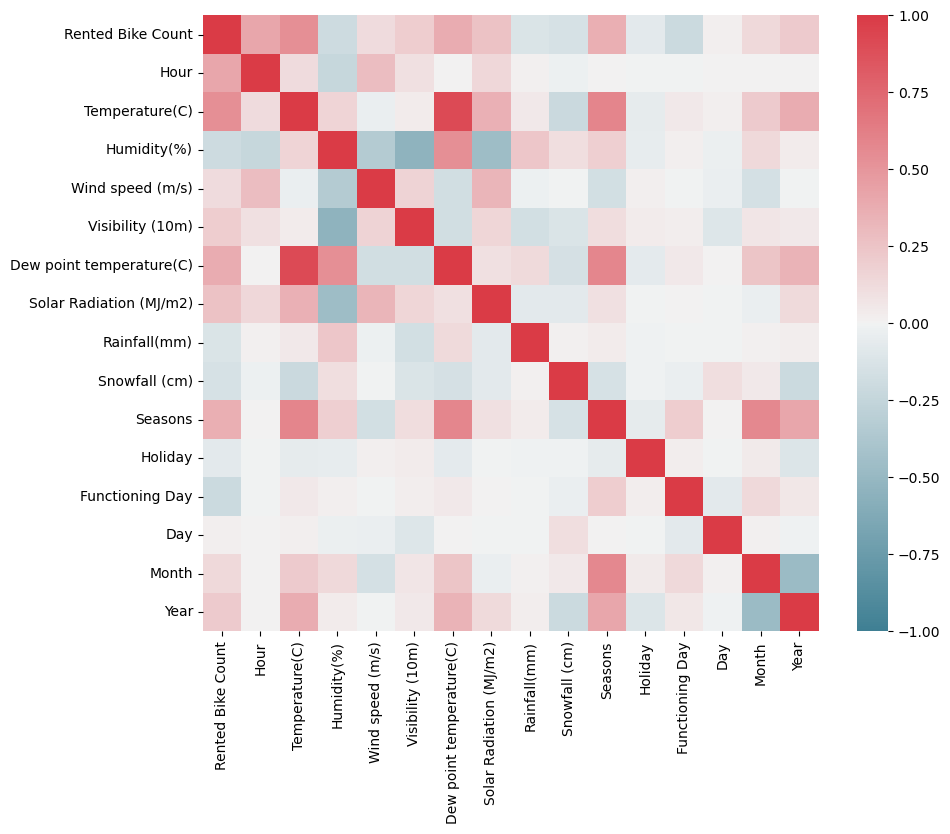
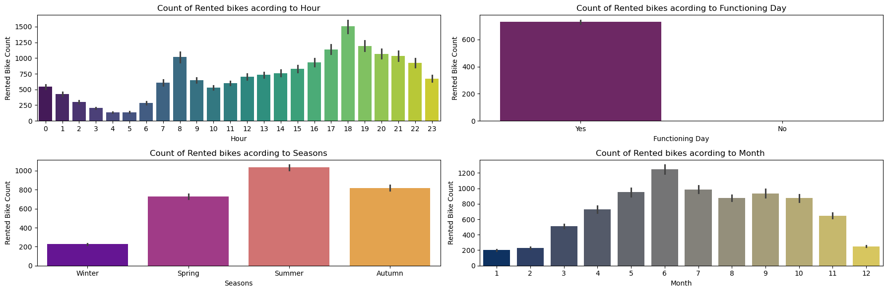
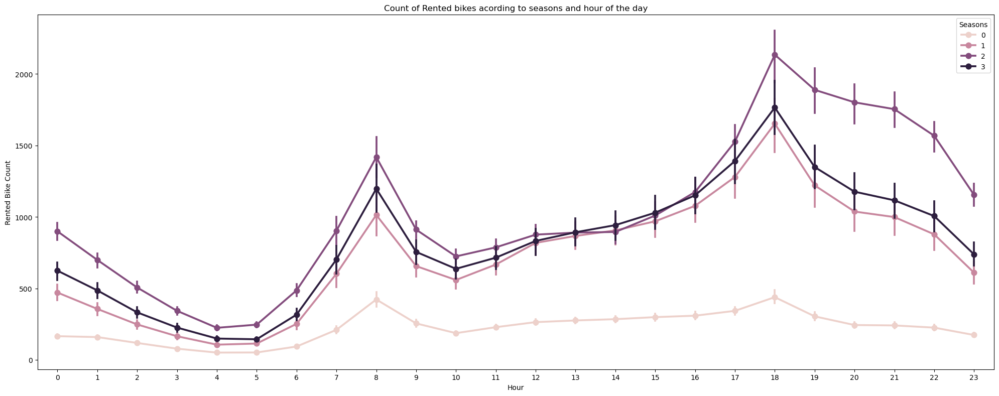
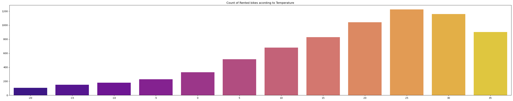
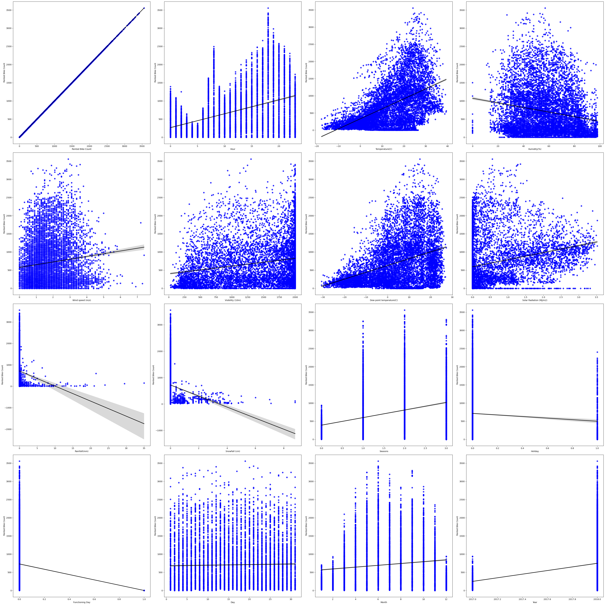
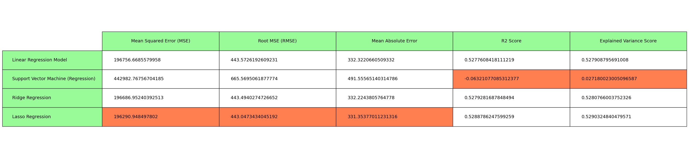
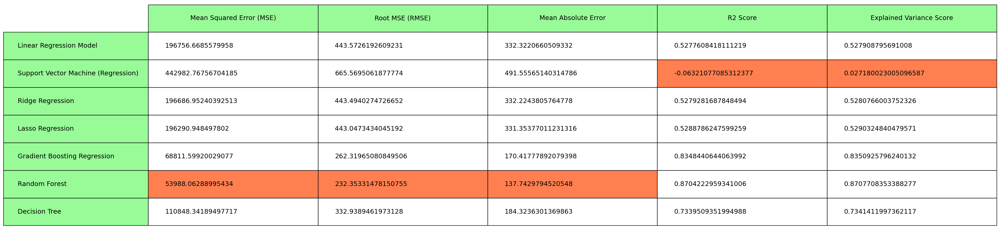
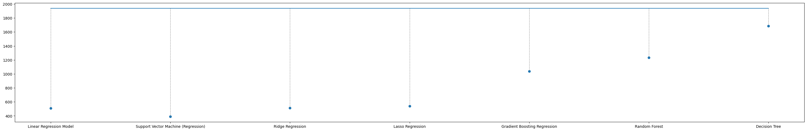
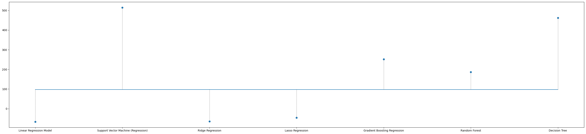
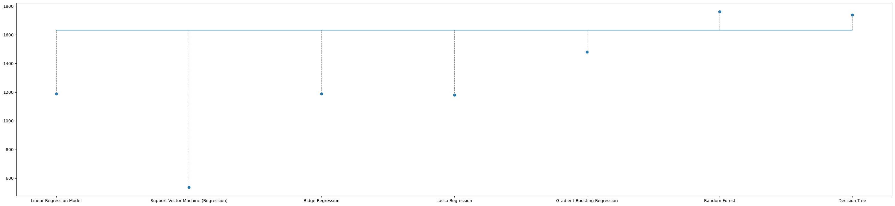

import pandas as pd
import numpy as np
import warnings
warnings.filterwarnings("ignore")df_bike = pd.read_csv("SeoulBikeData.csv")
df_bike.head(5)| Date | Rented Bike Count | Hour | Temperature(C) | Humidity(%) | Wind speed (m/s) | Visibility (10m) | Dew point temperature(C) | Solar Radiation (MJ/m2) | Rainfall(mm) | Snowfall (cm) | Seasons | Holiday | Functioning Day | |
|---|---|---|---|---|---|---|---|---|---|---|---|---|---|---|
| 0 | 01/12/2017 | 254 | 0 | -5.2 | 37 | 2.2 | 2000 | -17.6 | 0.0 | 0.0 | 0.0 | Winter | No Holiday | Yes |
| 1 | 01/12/2017 | 204 | 1 | -5.5 | 38 | 0.8 | 2000 | -17.6 | 0.0 | 0.0 | 0.0 | Winter | No Holiday | Yes |
| 2 | 01/12/2017 | 173 | 2 | -6.0 | 39 | 1.0 | 2000 | -17.7 | 0.0 | 0.0 | 0.0 | Winter | No Holiday | Yes |
| 3 | 01/12/2017 | 107 | 3 | -6.2 | 40 | 0.9 | 2000 | -17.6 | 0.0 | 0.0 | 0.0 | Winter | No Holiday | Yes |
| 4 | 01/12/2017 | 78 | 4 | -6.0 | 36 | 2.3 | 2000 | -18.6 | 0.0 | 0.0 | 0.0 | Winter | No Holiday | Yes |
https://stackoverflow.com/questions/29432629/plot-correlation-matrix-using-pandas
df_bike.info()<class 'pandas.core.frame.DataFrame'>
RangeIndex: 8760 entries, 0 to 8759
Data columns (total 14 columns):
# Column Non-Null Count Dtype
--- ------ -------------- -----
0 Date 8760 non-null object
1 Rented Bike Count 8760 non-null int64
2 Hour 8760 non-null int64
3 Temperature(C) 8760 non-null float64
4 Humidity(%) 8760 non-null int64
5 Wind speed (m/s) 8760 non-null float64
6 Visibility (10m) 8760 non-null int64
7 Dew point temperature(C) 8760 non-null float64
8 Solar Radiation (MJ/m2) 8760 non-null float64
9 Rainfall(mm) 8760 non-null float64
10 Snowfall (cm) 8760 non-null float64
11 Seasons 8760 non-null object
12 Holiday 8760 non-null object
13 Functioning Day 8760 non-null object
dtypes: float64(6), int64(4), object(4)
memory usage: 958.2+ KB#check for count of missing values in each column.
df_bike.isna().sum()
df_bike.isnull().sum()Date 0
Rented Bike Count 0
Hour 0
Temperature(C) 0
Humidity(%) 0
Wind speed (m/s) 0
Visibility (10m) 0
Dew point temperature(C) 0
Solar Radiation (MJ/m2) 0
Rainfall(mm) 0
Snowfall (cm) 0
Seasons 0
Holiday 0
Functioning Day 0
dtype: int64# Can break the date into date, month, year columns and convert them into integers (from strings) for the purpose of correlation map
days = [int((df_bike['Date'].iloc[i])[0:2]) for i in range(len(df_bike))]
month = [int((df_bike['Date'].iloc[i])[3:5]) for i in range(len(df_bike))]
year = [int((df_bike['Date'].iloc[i])[6:]) for i in range(len(df_bike))]
df_bike['Day'], df_bike['Month'], df_bike['Year'] = days, month, yeardf_bike.head(5)| Date | Rented Bike Count | Hour | Temperature(C) | Humidity(%) | Wind speed (m/s) | Visibility (10m) | Dew point temperature(C) | Solar Radiation (MJ/m2) | Rainfall(mm) | Snowfall (cm) | Seasons | Holiday | Functioning Day | Day | Month | Year | |
|---|---|---|---|---|---|---|---|---|---|---|---|---|---|---|---|---|---|
| 0 | 01/12/2017 | 254 | 0 | -5.2 | 37 | 2.2 | 2000 | -17.6 | 0.0 | 0.0 | 0.0 | Winter | No Holiday | Yes | 1 | 12 | 2017 |
| 1 | 01/12/2017 | 204 | 1 | -5.5 | 38 | 0.8 | 2000 | -17.6 | 0.0 | 0.0 | 0.0 | Winter | No Holiday | Yes | 1 | 12 | 2017 |
| 2 | 01/12/2017 | 173 | 2 | -6.0 | 39 | 1.0 | 2000 | -17.7 | 0.0 | 0.0 | 0.0 | Winter | No Holiday | Yes | 1 | 12 | 2017 |
| 3 | 01/12/2017 | 107 | 3 | -6.2 | 40 | 0.9 | 2000 | -17.6 | 0.0 | 0.0 | 0.0 | Winter | No Holiday | Yes | 1 | 12 | 2017 |
| 4 | 01/12/2017 | 78 | 4 | -6.0 | 36 | 2.3 | 2000 | -18.6 | 0.0 | 0.0 | 0.0 | Winter | No Holiday | Yes | 1 | 12 | 2017 |
import seaborn as sns
import matplotlib.pyplot as plt
df1_bike = df_bike.drop(columns = ['Date'])
# map unique season to numbers, map holiday to binary, and functioning day to binary
seasons = {}
for idx, i in enumerate(df_bike['Seasons'].drop_duplicates()):
seasons[i] = idx
holiday = {"No Holiday": 0, "Holiday": 1}
functioning = {"Yes": 0, "No": 1}
df1_bike.Holiday = [holiday[item] for item in df_bike.Holiday]
df1_bike.Seasons = [seasons[item] for item in df_bike.Seasons]
df1_bike['Functioning Day'] = [functioning[item] for item in df1_bike['Functioning Day'] ]
df1_bike.head(3)
f, ax = plt.subplots(figsize=(10, 8))
corr = df1_bike.corr()
sns.heatmap(corr,
cmap=sns.diverging_palette(220, 10, as_cmap=True),
vmin=-1.0, vmax=1.0,
square=True, ax=ax) Rented Bike Count Hour Temperature(C) Humidity(%) Wind speed (m/s) \
0 254 0 -5.2 37 2.2
1 204 1 -5.5 38 0.8
2 173 2 -6.0 39 1.0
Visibility (10m) Dew point temperature(C) Solar Radiation (MJ/m2) \
0 2000 -17.6 0.0
1 2000 -17.6 0.0
2 2000 -17.7 0.0
Rainfall(mm) Snowfall (cm) Seasons Holiday Functioning Day Day Month \
0 0.0 0.0 0 0 0 1 12
1 0.0 0.0 0 0 0 1 12
2 0.0 0.0 0 0 0 1 12
Year
0 2017
1 2017
2 2017 <Axes: >
plt.rcParams["figure.autolayout"] = True
fig, ax = plt.subplots(2, 2, figsize=(18, 6));
# hour vs bike count
sns.barplot(data=df1_bike,x='Hour',y='Rented Bike Count',ax=ax[0][0], palette='viridis');
ax[0][0].set(title='Count of Rented bikes acording to Hour');
# Functioning vs bike count
sns.barplot(data=df1_bike,x='Functioning Day',y='Rented Bike Count',ax=ax[0][1], palette='inferno');
ax[0][1].set(title='Count of Rented bikes acording to Functioning Day');
ax[0][1].set_xticklabels(['Yes', 'No'])
# season vs bike count
sns.barplot(data=df1_bike,x='Seasons', y='Rented Bike Count',ax=ax[1][0], palette='plasma');
ax[1][0].set(title='Count of Rented bikes acording to Seasons');
ax[1][0].set_xticklabels(['Winter', 'Spring', 'Summer', 'Autumn'])
# month vs bike count
sns.barplot(data=df1_bike,x='Month',y='Rented Bike Count',ax=ax[1][1], palette='cividis');
ax[1][1].set(title='Count of Rented bikes acording to Month ');
plt.show()

fig,ax=plt.subplots(figsize=(20,8))
sns.pointplot(data=df1_bike,x='Hour',y='Rented Bike Count',hue='Seasons',ax=ax);
ax.set(title='Count of Rented bikes acording to seasons and hour of the day');
fig, ax = plt.subplots(figsize=(30, 6));
# temperature vs bike count
# Convert temperature in groups of 5C and average the rented bike counts for that range (rounding to 5s)
temp_min, temp_max = round(min(df1_bike['Temperature(C)'])/5)*5, round(max(df1_bike['Temperature(C)'])/5)*5
dict_temp = {}
for i in range(temp_min, temp_max, 5):
# Filter rows based on the temperature interval
filtered_df = df1_bike[(df1_bike['Temperature(C)'] >= i) & (df1_bike['Temperature(C)'] < i+5)]
dict_temp[i] = filtered_df['Rented Bike Count'].mean()
# print(dict_temp)
# print(temp_max, temp_min)
sns.barplot(data=dict_temp,ax=ax, palette='plasma');
ax.set(title='Count of Rented bikes acording to Temperature');
# plt.show()
# printing the regression plot for all the numerical features
fig,ax=plt.subplots(4, 4, figsize=(40,40)) # since we know there are 16 features
for idx, col in enumerate(df1_bike.columns):
sns.regplot(x=df1_bike[col],y=df1_bike['Rented Bike Count'],scatter_kws={"color": 'blue'}, line_kws={"color": "black"}, ax=ax[idx//4][idx%4])
from sklearn.model_selection import train_test_split
y = df1_bike['Rented Bike Count']
X = (df1_bike.drop(columns = ['Rented Bike Count'])).to_numpy()
X_train, X_test, y_train, y_test = train_test_split(X, y, test_size=0.2, random_state=42)from sklearn.linear_model import LinearRegression
from sklearn.svm import SVR
from sklearn import linear_model
from sklearn.ensemble import GradientBoostingRegressor
from sklearn.ensemble import RandomForestRegressor
from sklearn.tree import DecisionTreeRegressor
from sklearn.metrics import mean_squared_error, mean_absolute_error, r2_score, explained_variance_score
model_names = ['Linear Regression Model',
'Support Vector Machine (Regression)',
'Ridge Regression',
'Lasso Regression',
'Gradient Boosting Regression',
'Random Forest',
'Decision Tree']
models = [LinearRegression(),
SVR(),
linear_model.Ridge(),
linear_model.Lasso(),
GradientBoostingRegressor(),
RandomForestRegressor(),
DecisionTreeRegressor()]
evaluation_metrics = ['Mean Squared Error (MSE)',
'Root MSE (RMSE)',
'Mean Absolute Error',
'R2 Score',
'Explained Variance Score']
y_preds = [] # list of model predictions
model_scores = [] # list of model scores based on the evaluation metrics defined
for model in models:
reg = model
reg.fit(X_train, y_train)
y_pred = reg.predict(X_test)
y_preds.append(y_pred)
mse = mean_squared_error(y_test.values, y_pred)
rmse = np.sqrt(mse)
mae = mean_absolute_error(y_test.values, y_pred)
r2 = r2_score(y_test.values, y_pred)
evs = explained_variance_score(y_test.values, y_pred)
model_scores.append([mse, rmse, mae, r2, evs])plt.rcParams["figure.figsize"] = [30, 7]
plt.rcParams["figure.autolayout"] = True
fig, axs = plt.subplots(1, 1)
axs.axis('tight')
axs.axis('off')
table1 = axs.table(cellText=model_scores[0:4],
cellLoc = 'left',
rowLabels = model_names[0:4],
rowColours= ["palegreen"] * 10,
colLabels=evaluation_metrics,
colColours= ["palegreen"] * 10,
loc='center')
# Highlight cells with minimum value in each column
for col_idx, metric in enumerate(evaluation_metrics):
col_values = [row[col_idx] for row in model_scores[0:4]]
min_value_idx = col_values.index(min(col_values))
# Highlight the cell with minimum value in coral color
table1[min_value_idx + 1, col_idx].set_facecolor("coral")
table1.auto_set_font_size(False)
table1.set_fontsize(14)
table1.scale(1, 4)
fig.tight_layout()
plt.show()
plt.rcParams["figure.figsize"] = [30, 7]
plt.rcParams["figure.autolayout"] = True
fig, axs = plt.subplots(1, 1)
axs.axis('tight')
axs.axis('off')
table2 = axs.table(cellText=model_scores,
cellLoc = 'left',
rowLabels = model_names,
rowColours= ["palegreen"] * 10,
colLabels=evaluation_metrics,
colColours= ["palegreen"] * 10,
loc='center')
# Highlight cells with minimum value in each column
for col_idx, metric in enumerate(evaluation_metrics):
col_values = [row[col_idx] for row in model_scores]
min_value_idx = col_values.index(min(col_values))
# Highlight the cell with minimum value in coral color
table2[min_value_idx + 1, col_idx].set_facecolor("coral")
table2.auto_set_font_size(False)
table2.set_fontsize(14)
table2.scale(1, 4)
fig.tight_layout()
plt.show()
# printing how far the predicted value is to the actual value for a random row in X
import random
fig, ax = plt.subplots(figsize=(30, 5));
length = len(model_names)
for i in range(3):
idx = random.randint(0,len(y_test)-1)
plt.plot(range(length), [(y_test.values)[idx]]*length, label='True Value');
plt.scatter(range(length), [y_preds[q][idx] for q in range(length)], label='Predicted Values');
for j in range(length):
plt.plot([j, j], [(y_test.values)[idx], y_preds[j][idx]], color='gray', linestyle='--', linewidth=0.8)
plt.xticks(range(length), model_names)
plt.tight_layout()
plt.show()



df_gdp = pd.read_csv("China_GDP.csv")
df_gdp.head(5)print(df_gdp.info())
print(df_gdp.isna().sum())# plot Year vs GDP_value
sns.scatterplot(data=df_gdp, x = 'Value', y = 'Year');
plt.show()sns.regplot(x=df_gdp['Value'],y=df_gdp['Year'],scatter_kws={"color": 'blue'}, line_kws={"color": "black"})from sklearn.model_selection import train_test_split
y = df_gdp['Year']
X = (df_gdp.drop(columns = ['Year'])).to_numpy()
X_train, X_test, y_train, y_test = train_test_split(X, y, test_size=0.3, random_state=42)fig, ax = plt.subplots(2,2, figsize=(10, 10));
for idx, model in enumerate(models[0:4]):
reg = model
reg.fit(X_train, y_train)
y_pred = reg.predict(X_test)
# Plot the data points for training set
ax[idx//2][idx%2].scatter(X_train, y_train, marker='o', color='black', label='Train');
# Plot the data points for testing set (true)
ax[idx//2][idx%2].scatter(X_test, y_test, color='purple', marker='o', label='True');
# Plot the data points for testing set (predicted)
ax[idx//2][idx%2].scatter(X_test, y_pred, color='blue', marker='o', label='Predicted');
ax[idx//2][idx%2].set_title(model_names[idx])
ax[idx//2][idx%2].set_xlabel("GDP")
ax[idx//2][idx%2].set_xlabel("Year")
ax[idx//2][idx%2].legend()
plt.title("True vs Predicted Performance of Linear Regression Models")
plt.show()
y_preds = [] # list of model predictions
model_scores = [] # list of model scores based on the evaluation metrics defined
fig, ax = plt.subplots(3, 1, figsize=(10, 10));
for idx, model in enumerate(models[4:]):
reg = model
reg.fit(X_train, y_train)
y_pred = reg.predict(X_test)
# Plot the data points for training set
ax[idx].scatter(X_train, y_train, marker='o', color='black', label='Train');
# Plot the data points for testing set (true)
ax[idx].scatter(X_test, y_test, color='purple', marker='o', label='True');
# Plot the data points for testing set (predicted)
ax[idx].scatter(X_test, y_pred, color='blue', marker='o', label='Predicted');
ax[idx].set_title(model_names[4+idx])
ax[idx].set_xlabel("GDP")
ax[idx].set_xlabel("Year")
ax[idx].legend()
y_preds.append(y_pred)
mse = mean_squared_error(y_test.values, y_pred)
rmse = np.sqrt(mse)
mae = mean_absolute_error(y_test.values, y_pred)
r2 = r2_score(y_test.values, y_pred)
evs = explained_variance_score(y_test.values, y_pred)
model_scores.append([mse, rmse, mae, r2, evs])
plt.title("True vs Predicted Performance of Non-Linear Regression Models")
plt.show()plt.rcParams["figure.figsize"] = [30, 7]
plt.rcParams["figure.autolayout"] = True
fig, axs = plt.subplots(1, 1)
axs.axis('tight')
axs.axis('off')
table1 = axs.table(cellText=model_scores,
cellLoc = 'left',
rowLabels = model_names[4:],
rowColours= ["palegreen"] * 10,
colLabels=evaluation_metrics,
colColours= ["palegreen"] * 10,
loc='center')
# Highlight cells with minimum value in each column
for col_idx, metric in enumerate(evaluation_metrics):
col_values = [row[col_idx] for row in model_scores]
min_value_idx = col_values.index(min(col_values))
# Highlight the cell with minimum value in coral color
table1[min_value_idx + 1, col_idx].set_facecolor("coral")
table1.auto_set_font_size(False)
table1.set_fontsize(14)
table1.scale(1, 4)
fig.tight_layout()
plt.show()# printing how far the predicted value is to the actual value for a random row in X
import random
fig, ax = plt.subplots(figsize=(30, 5));
length = len(model_names[4:])
for i in range(3):
idx = random.randint(0,len(y_test)-1)
plt.plot(range(length), [(y_test.values)[idx]]*length, label='True Value');
plt.scatter(range(length), [y_preds[q][idx] for q in range(length)], label='Predicted Values');
for j in range(length):
plt.plot([j, j], [(y_test.values)[idx], y_preds[j][idx]], color='gray', linestyle='--', linewidth=0.8)
plt.xticks(range(length), model_names[4:])
plt.tight_layout()
plt.show()